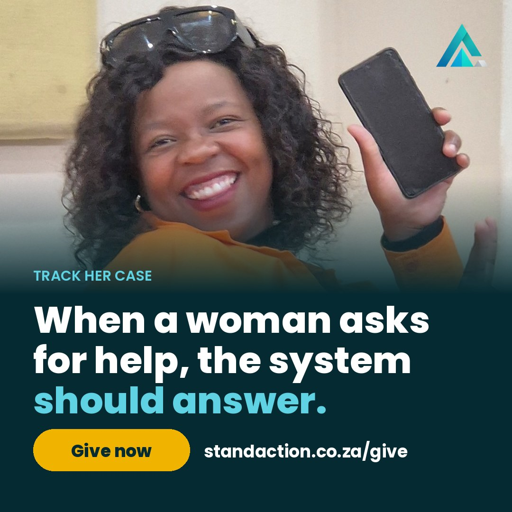
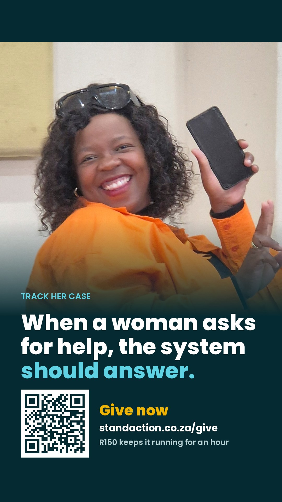
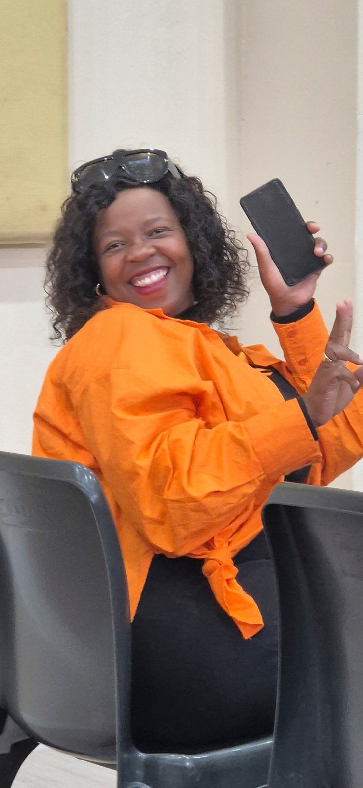

Forward-friendly message
For groups, and for anyone passing it on. Works as it is.
💙 When a woman asks for help, the system should answer.
Too often in South Africa, a woman's case gets lost between the police station, the hospital and the court. Track Her Case, live in the Overstrand, gives every case a private tracking number and follows it all the way to justice.
During the 16 Days of Activism we're raising R150,000 to keep it running through the festive season, the most dangerous time of year for women.
🇿🇦 R150 keeps it running for an hour
🌍 Abroad? $10 or £8 goes much further here
standaction.co.za/give
Please forward this to one person 🙏🏽
Stacey's personal message
Stacey's own story, for her inner circle. Replace [name].
Hi [name] 💙 Can I ask you something personal?
I once watched a man ram a woman's head into a car. I called the police five times. When they came, he said everything was fine, and they left.
So we built Track Her Case. In the Overstrand, every reported case of violence against a woman now gets a private tracking number and is followed from the police station to court. It's live and it's working.
During the 16 Days of Activism I'm raising R150,000 to keep it running through the festive season. R150 keeps it running for an hour.
standaction.co.za/give
Would you be one of the first? And if you can, forward this to one person who'd care. Thank you. Stace
Personal ask to someone you know
Send one by one. Replace [name] and [your name] before sending.
Hi [name] 💙 Can I ask you something personal?
I'm supporting Track Her Case. In the Overstrand, every reported case of violence against a woman now gets a private tracking number and is followed from the police station to court. It's live and it's working.
During the 16 Days of Activism we're raising R150,000 to keep it running through the festive season. R150 keeps it running for an hour.
standaction.co.za/give
Would you be one of the first? And if you can, forward this to one person who'd care. Thank you. [your name]
Friends and family overseas
Replace [name] and [your name]. The link opens the giving page for donors abroad.
Hi [name] 💙 I'd love your help with something close to my heart. In South Africa a system called Track Her Case follows every reported case of violence against a woman, from the police station to the court, so no case gets lost. During the 16 Days of Activism we're raising R150,000 to keep it running through the festive season. Because of the exchange rate, £20 or $25 becomes about R440 here, almost three hours of the system running. You can give securely in your own currency, with UK Gift Aid or US tax relief:
https://standaction.co.za/give
And if you could share it with a few friends there, it would mean the world. [your name]
Business owners: sponsor a day
Replace [name], [business name] and [your name].
Hi [name], I have an unusual ask. For R3,370, [business name] could keep Track Her Case running for a full day this festive season, tracking every case of violence against a woman in the Overstrand from report to court. With your permission, STAND will thank you publicly by date, and the gift is Section 18A tax-deductible.
standaction.co.za/give
Could I count you in? [your name]
Follow-up, three or four days later
Only to people who haven't replied. Replace [name] and [amount].
Hi [name], just a gentle nudge in case my message got buried. We're [amount] towards R150,000 already. If you'd like to be part of it:
standaction.co.za/give
Either way, thank you for cheering us on 💙
Thank you, within 24 hours
To every donor you know. Replace [name], [amount] and [time] (R150 = more than an hour, R500 = more than three hours, R1,000 = about seven hours, R3,370 = a full day).
Hi [name], I just saw your gift and wanted to say thank you personally. Your [amount] keeps Track Her Case running for [time], which means a woman's case keeps moving from the police station to the court. It means a great deal to me. If you know anyone else who might help, please pass it on 💙
Save the image or video to your phone, add it to your Status, then paste the caption.
Day 1

R150 keeps Track Her Case running for an hour. standaction.co.za/give
Day 3
When a woman asks for help, the system should answer. Give or share: standaction.co.za/give
Day 5

[X] people have given so far. Thank you 💙 Help us reach R150,000: standaction.co.za/give
Day 7

She walks alongside women whose cases are moving through the system. Keep her going this festive season: standaction.co.za/give
Voice note (30 to 45 seconds)
A voice note from someone you know is one of the most trusted things on WhatsApp. In your own words, say who you are and why this matters to you; that Track Her Case follows every case of violence against a woman in the Overstrand from report to court; that we're raising R150,000 during the 16 Days and R150 keeps it running for an hour; then ask them to give and forward. Send it straight after your personal message.